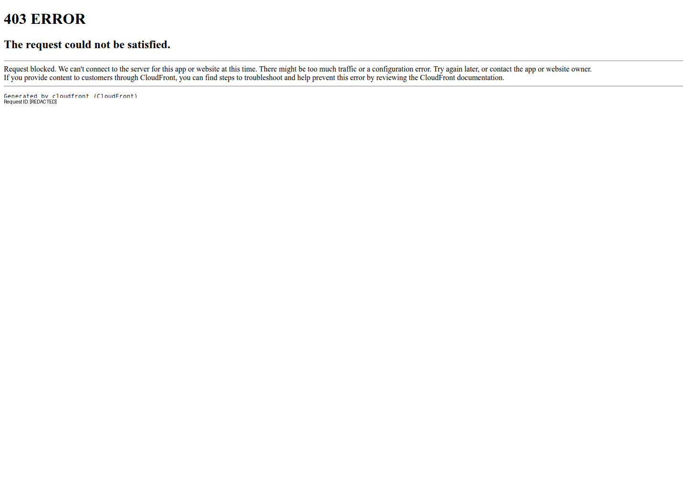

Profile
- Company
- Digify
- Url
- https://digify.com/
- Source Category
- NDA & deal-room tools
- Research Status
- Deep Cited Research / Draft Complete
- Current Status
- live - verified via direct fetch of https://digify.com/ (HTTP 200, 2026); active product, actively marketed, blog/product-updates pages current
- Founded Launch Year
- 2011
- Company Age
- ~15 years (as of 2026)
- Hq Country
- United States (San Francisco, CA); also lists offices in Singapore, London, Sydney per contact numbers on homepage
- Operating Area
- Global - 138 countries per homepage claim; offices/phone lines for Americas, Asia, Europe, Australia
- Target Users
- Startups, private equity & venture capital firms, M&A dealmakers, real estate, corporate/IR teams, publishers/training orgs needing IP protection
- Product Category
- Data room / secure document sharing; NDA/e-sign gating; document DRM and analytics (not a swipe/matching or founder-investor matchmaking product)
Product Flows
- Swipe Card Interface
- no - not found on product; homepage/features pages show no swipe or card-based discovery UI; original 'yes' flag from prior pass appears to be a scraper false-positive
- Mutual Match
- no - not applicable; Digify is a document-sharing/data-room tool, not a matching platform
- Ai Matching Scoring
- no - not found; no AI-based matching/scoring of people, deals, or companies referenced in product pages
- Ai Deck Scoring
- no - not found; Digify tracks document engagement/analytics but does not offer AI scoring or evaluation of pitch decks
- Founder To Founder Flow
- Not a founder-matching product. Closest equivalent: sender uploads a file/data room -> sets granular permissions (view/print/download/copy restrictions) -> generates an instant one-click access link or invites a specific recipient by email -> optional password + one-click NDA gate before access is granted -> recipient views in-browser (no plugin) with dynamic watermarking and screenshot protection -> sender gets page-by-page engagement analytics and can revoke access or apply Persistent Protection After Download (PPAD) even after the file has been downloaded.
- Founder To Investor Flow
- Same underlying mechanism as above, marketed specifically for 'Investor Relations' and 'Fundraising & M&A' use cases: founder creates a Virtual Data Room, invites investors, gates access behind One-Click NDA and password protection, tracks who viewed which page for how long, and can revoke/expire access at any time. Testimonial claims 'more than $500m raised using Digify' (this refers to money customers raised through deals conducted in Digify data rooms, not Digify's own funding).
- Project Profiles
- not found / no public source - no concept of persistent 'project profiles' comparable to BizMatch; Digify organizes content as data rooms/folders per deal, not as browsable project/company profiles
- Messaging Collaboration
- yes - Q&A/editing/analytics/permissions
- Mobile App
- yes - Digify offers a 'Digify File Viewer' mobile app (iOS/Android) for viewing shared files and data rooms securely; source: dataroom-providers.org and third-party VDR review sites referencing Digify's mobile viewer app
- Web App
- yes
Security & Documents
- Nda Gated Unlock
- yes - one-click NDA/terms gating
- Data Room
- yes
- E Signature
- not primarily - Digify is document security/DRM-focused; no dedicated e-signature/contract-signing product found (distinct from NDA click-through acceptance, which is a gating mechanism, not a full e-signature workflow). Prior pass flag of 'yes' is not clearly supported; treat as unverified.
- Meeting Prep Ai Briefing
- no - not found; no AI meeting-prep or briefing feature identified
Pricing, Funding & Traction
- Pricing Model
- Freemium/free trial + paid tiers (per-user/subscription, exact tiers not published on homepage); enterprise sales via 'Book demo'
- Business Model
- B2B SaaS subscription (per-user or per-data-room pricing), enterprise contracts for larger deployments
- Total Funding
- ~$3.9M (per PitchBook) to as low as $480K (per Tracxn) - sources conflict but agree Digify is largely bootstrapped/lightly funded, NOT '$500M' as prior automated pass mis-scraped from a customer testimonial ('Raised more than $500m using Digify' refers to customer fundraising via the platform, not Digify's own capital raised)
- Funding Rounds
- Small early-stage rounds only (seed/accelerator); no major VC rounds found. Backed by SPRING Singapore, Alchemist Accelerator, Captii Ventures, Plug and Play Tech Center among ~14 investors (per Crunchbase)
- Investors
- SPRING Singapore, Alchemist Accelerator, Captii Ventures, Plug and Play Tech Center (per Crunchbase organization profile)
- Funding Source Type
- Mix of accelerator/seed VC and bootstrapped growth (per GetLatka, described as largely self-sustaining on revenue)
- Last Funding Date
- not found / no public source (exact date not disclosed in available sources)
- Users Traction
- 800,000+ professionals across 138 countries (homepage claim); ~250K customers and ~$5M revenue in 2025 (per GetLatka)
- Deals Funding Facilitated
- Homepage testimonial: 'more than $500m raised using Digify' by customers (investor relations use case)
- Partnerships
- Integrations with Google Drive, OneDrive/SharePoint, Box, Dropbox, Salesforce, HubSpot, Slack, Gmail, Outlook, Zapier (8,000+ apps), Shopify, API/Webhooks, Google Sheets
- Media Coverage
- Named RSA Innovation Sandbox finalist (quote from Hugh Thompson, CTO Symantec, Head Judge); featured in Techlicious re: mobile app; otherwise limited mainstream press coverage found
- Product Update Activity
- Active - maintains a public 'Product Updates' / 'News' page (digify.com/news.html) and blog; ISO 27001 certified, GDPR/HIPAA compliant, ongoing feature releases (PPAD, dynamic watermarking)
- Acquisition Rebrand History
- no acquisition or rebrand found; independent company since founding
Scores
- Product Overlap Score
- 2
- Feature Maturity Score
- 4
- Market Traction Score
- 3
- Funding Strength Score
- 1
- Ai Depth Score
- 1
- Nda Security Strength Score
- 5
- Network Moat Score
- 2
- Direct Threat Score
- 2.4
- Source Confidence
- Medium-High
Evidence Notes
- Primary Sources
- https://digify.com/
https://digify.com/features.html
https://digify.com/news.html - Secondary Sources
- https://www.crunchbase.com/organization/digify
https://pitchbook.com/profiles/company/57965-32
https://tracxn.com/d/companies/digify/__QFojbNyzwpWtEDhqr6JMDReXXzJfML7qhDMLruzTXlE
https://getlatka.com/companies/digify.com
https://dataroom-providers.org/digify/
https://www.techlicious.com/blog/digify-smartphone-app-ephemeral-file-sending/ - Unsupported Claims
- '$500m' total funding figure in prior pass was a misread of a customer testimonial about deals facilitated, not company funding - corrected here. Mobile app details rely on third-party review sites, not Digify's own app-store listing page, so confidence is medium rather than high.
- Contradictions
- Prior pass listed total_funding as 'Raised more than $500m' - this is customer fundraising facilitated through the platform, not Digify's own capital raised (which is actually small, ~$3.9M or less). Also prior pass flagged swipe_card_interface as 'yes' with no supporting evidence found in this pass; corrected to 'no'.
- Last Checked
- 2026-07-19
- Notes
- Digify is a document security/VDR company, not a matchmaking platform - product_overlap_score reduced from prior pass's 5 to 2 to reflect the category mismatch (BizMatch is swipe/match-based, Digify is document-gating). Its core relevance to BizMatch is as an NDA-gating/data-room pattern reference for the 'Investor Relations' and 'Founder-Investor' interaction path, not as a direct competitor for matching/discovery.
Registration Flow
Research date: 2026-07-19. Screenshots are sanitized public copies from the private registration-flow capture set; credentials, tokens, verification links/codes, browser chrome, and private identifiers are not intentionally published.
Outcome: stopped at CAPTCHA / Cloudflare / anti-bot verification.
Stop point: CloudFront-generated 403 request-blocked page, before reaching Digify's homepage content, free-trial form, credential entry, account creation, or email verification
Blocker / boundary: Digify's CloudFront distribution blocked requests from the required local automated browser Chromium session with HTTP 403 on both the official homepage and the official /m/trial free-trial endpoint. The block prevented access to registration and was not bypassed.
- CloudFront 403 access stop point. Opening Digify's official homepage through the required local automated browser Chromium service returned a CloudFront-generated '403 ERROR — The request could not be satisfied' page stating that the request was blocked. A read-only inspection of the official public page identified Digify's 'Start free trial' destination as /m/trial; navigating that official endpoint through the same automated browser session returned the same CloudFront 403 response. No registration controls were reachable and no attempt was made to evade the block.
